8.9. Cierre de Caja del Punto de Venta¶
Ubique y seleccione en el menú de ADempiere, la carpeta “Gestión de Ventas”, luego seleccione la carpeta “Órdenes de Venta”, por último seleccione la carpeta “Punto de Venta”. Para finalizar, seleccione la ventana “Punto de Venta”.

Imagen 1. Menú de ADempiere
Luego de realizar desde el punto de venta todas las tomas de pedido del día, seleccione la opción “Cerrar Caja del Punto de Venta”, ubicada en el menú desplegado por el icono “Proceso” de la barra de herramientas de la ventana “Punto de Venta”, explicada en el documento Barra de Herramientas del Punto de Venta elaborado por ERPyA.
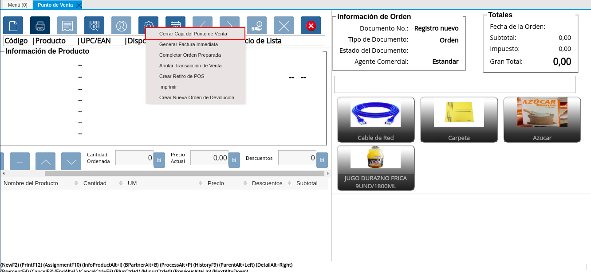
Imagen 2. Opción Cerrar Caja del Punto de Venta
Podrá visualizar la ventana “Cerrar Caja del Punto de Venta”, con diferentes campos que permiten filtrar la búsqueda de información según lo requerido por el socio del negocio vendedor que esta realizando el cierre de caja.
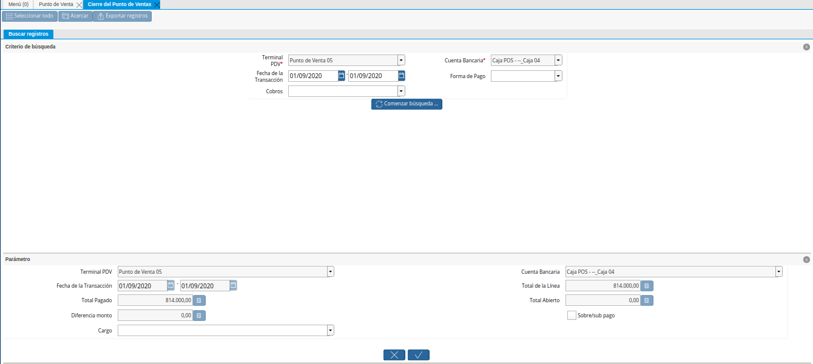
Imagen 3. Ventana Cierre de Caja del Punto de Venta
En el campo “Terminal PDV”, podrá visualizar el terminal configurado para el socio del negocio vendedor.
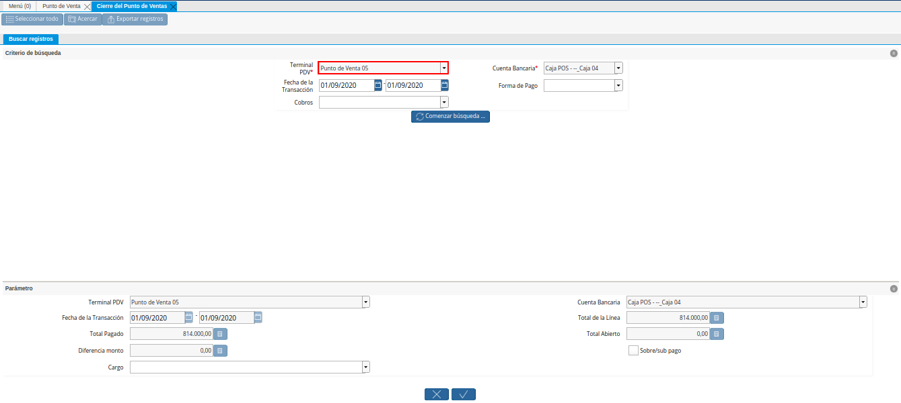
Imagen 4. Campo Terminal PDV del Filtro de Búsqueda de la Ventana Cierre de Caja del Punto de Venta
En el campo “Cuenta Bancaria”, podrá visualizar la cuenta caja asociada al socio del negocio vendedor en la configuración del terminal PDV.
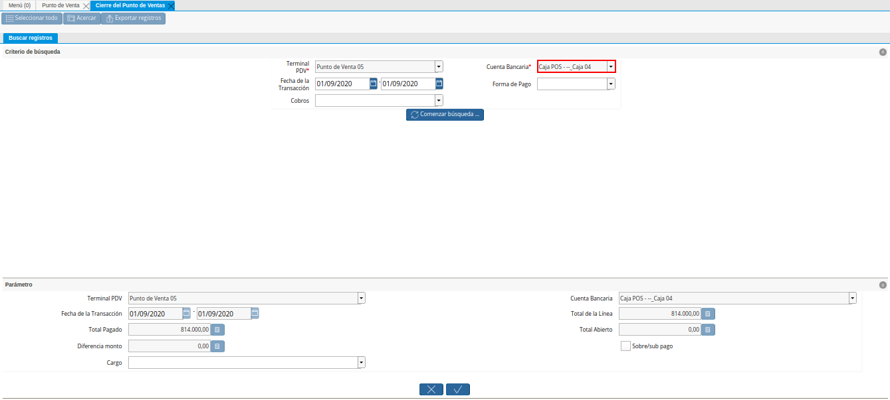
Imagen 5. Campo Cuenta Bancaria del Filtro de Búsqueda de la Ventana Cierre de Caja del Punto de Venta
Seleccione en el campo “Fecha de la Transacción”, el rango de fecha en el cual fue realizada la toma de pedido por medio del punto de venta.
Imagen 6. Campo Fecha de la Transacción del Filtro de Búsqueda de la Ventana Cierre de Caja del Punto de Venta
Seleccione en el campo “Tipo de Licitación”, el tipo de pago por el cual requiere filtrar las tomas de pedido realizadas.
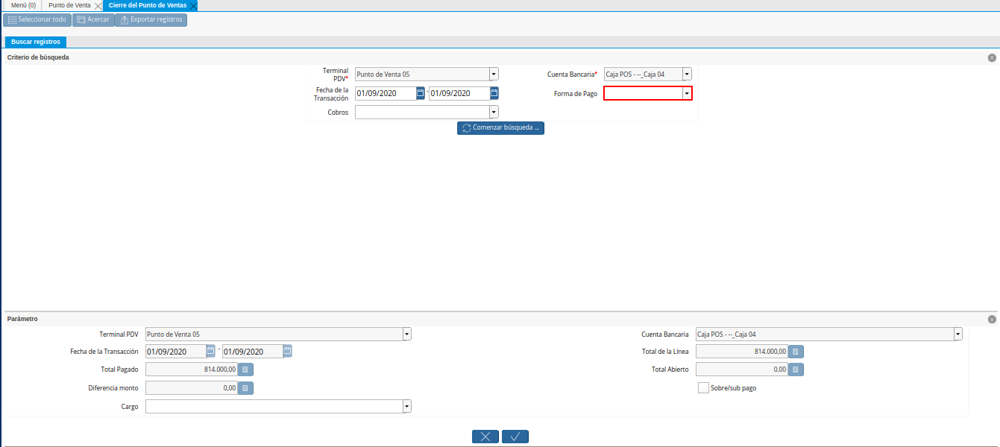
Imagen 7. Campo Tipo de Licitación del Filtro de Búsqueda de la Ventana Cierre de Caja del Punto de Venta
Indique en el campo “Cobros”, si las tomas de pedido realizadas fueron cobradas o no.
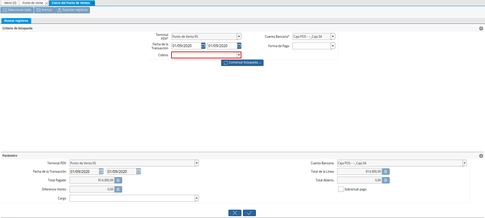
Imagen 8. Campo Cobros del Filtro de Búsqueda de la Ventana Cierre de Caja del Punto de Venta
Seleccione la opción “Comenzar Búsqueda”, para realizar la búsqueda de todas las tomas de pedido realizadas por el socio del negocio vendedor, según lo seleccionado en los campos anteriormente explicados.
Imagen 9. Opción Comenzar Búsqueda para Filtrar la Búsqueda de la Ventana Cierre de Caja del Punto de Venta
Podrá visualizar el listado de todos los cobros realizados por las órdenes de ventas POS generadas desde el punto de venta. Así como también, las transacciones de apertura y retiros de fondos que se realicen en la caja durante el día, para realizar el cierre de caja debe seleccionar todos los registros de transacciones que contiene la misma.
Imagen 10. Listado de Todos los Cobros Realizados por las Órdenes de Ventas del Punto de Venta
En el grupo de campos “Parámetros”, podrá visualizar los siguientes campos:
En el campo “Terminal PDV”, podrá visualizar el terminal configurado para el socio del negocio vendedor.
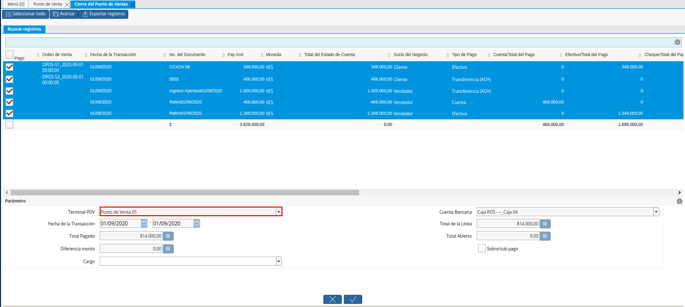
Imagen 11. Campo Terminal PDV de la Ventana Cierre de Caja del Punto de Venta
En el campo “Cuenta Bancaria”, podrá visualizar la cuenta caja asociada al socio del negocio vendedor en la configuración del terminal PDV.
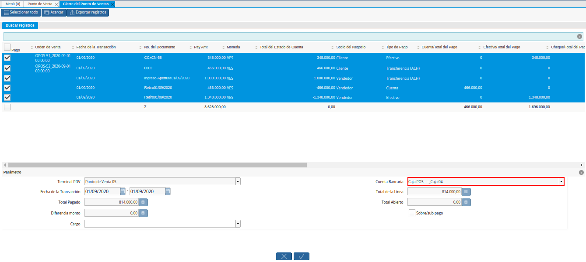
Imagen 12. Campo Cuenta Bancaria de la Ventana Cierre de Caja del Punto de Venta
En el campo “Fecha de la Transacción”, el rango de fecha en el cual fue realizada la toma de pedido por medio del punto de venta.
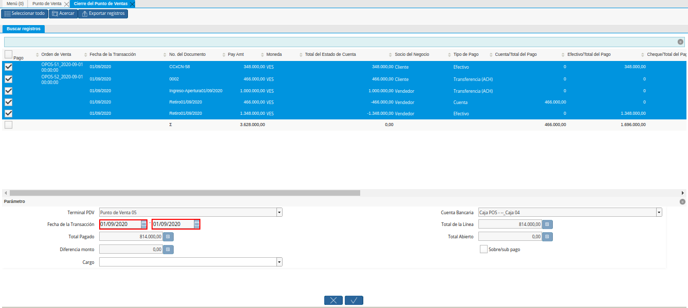
Imagen 13. Campo Fecha de la Ventana Cierre de Caja del Punto de Venta
En el campo “Total de la Línea”, la cantidad total de la línea con impuestos incluidos.
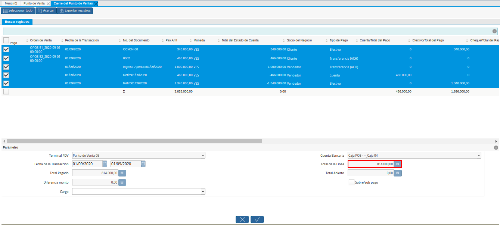
Imagen 14. Campo Total de la Línea de la Ventana Cierre de Caja del Punto de Venta
En el campo “Total Pagado”, la monto total pagado de las órdenes de venta realizadas desde el punto de venta.
Imagen 15. Campo Total Pagado de la Ventana Cierre de Caja del Punto de Venta
En el campo “Total Abierto”, el monto total abierto de las órdenes de venta realizadas desde el punto de venta.
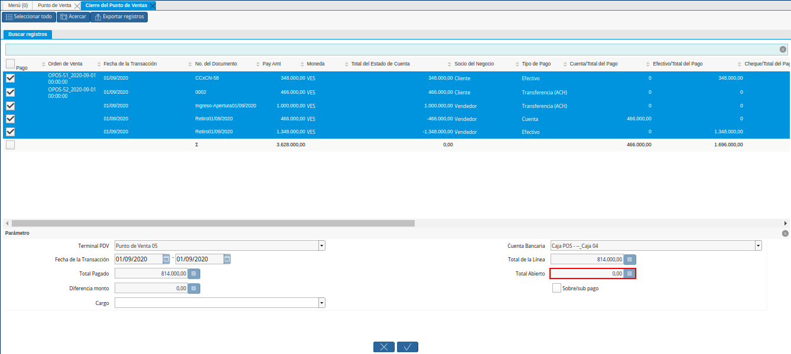
Imagen 16. Campo Total Abierto de la Ventana Cierre de Caja del Punto de Venta
En el campo “Diferencia Monto”, podrá visualizar la diferencia del monto existente entre el retiro y el resultado del total pagado menos el total de la línea.
Imagen 17. Campo Diferencia Monto de la Ventana Cierre de Caja del Punto de Venta
Note
El valor de este campo proviene de la fórmula (Total Retiro en Cierre de Caja + (Total Pagado - Total de la Línea)).
Tilde el checklist “Sobre/Sub Pago”, para indicar que existe un sobre pago (no contabilizado) o un sub pago (pago parcial).
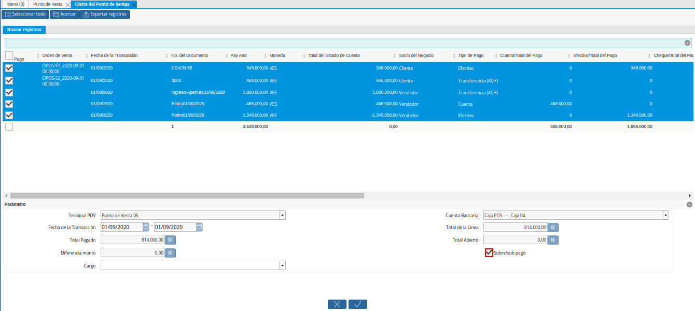
Imagen 18. Checklist Sobre/Sub Pago de la Ventana Cierre de Caja del Punto de Venta
Note
Si el punto de venta tuvo pagos de más (Sobre) o de menos (Sub), ADempiere calcula la diferencia. Para el caso expuesto en el presente material, no es necesario seleccionar el checklist.
Seleccione en el campo “Cargo”, el cargo correspondiente al cierre de caja que se encuentra realizando desde el punto de venta.
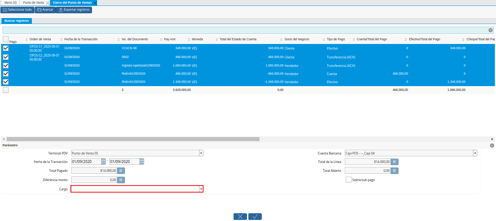
Imagen 19. Campo Cargo de la Ventana Cierre de Caja del Punto de Venta
Note
Cuando existen pagos de más (Sobre) o de menos (Sub), se selecciona un cargo y ADempiere genera una linea en el cierre contra el cargo seleccionado, permitiendo cuadrar la caja del día. Para el caso expuesto en el presente material, no es necesario seleccionar ningún cargo.
Seleccione la opción “OK”, para realizar el cierre de caja del punto de venta con los cobros seleccionados y generar el documento pertinente en la ventana “Cierre de Caja”.
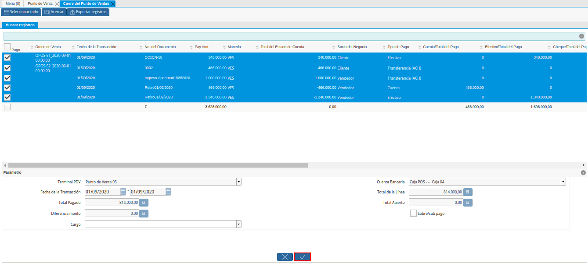
Imagen 20. Opción OK de la Ventana Cierre de Caja del Punto de Venta
8.9.1. Consultar Registro en Cierre de Caja¶
Al ejecutar el proceso “Cerrar de Caja del Punto de Venta”, se completa el registro con la cuenta “Caja 04”, creado en la ventana “Cierre de Caja”, llevando la misma a cero (0) nuevamente.
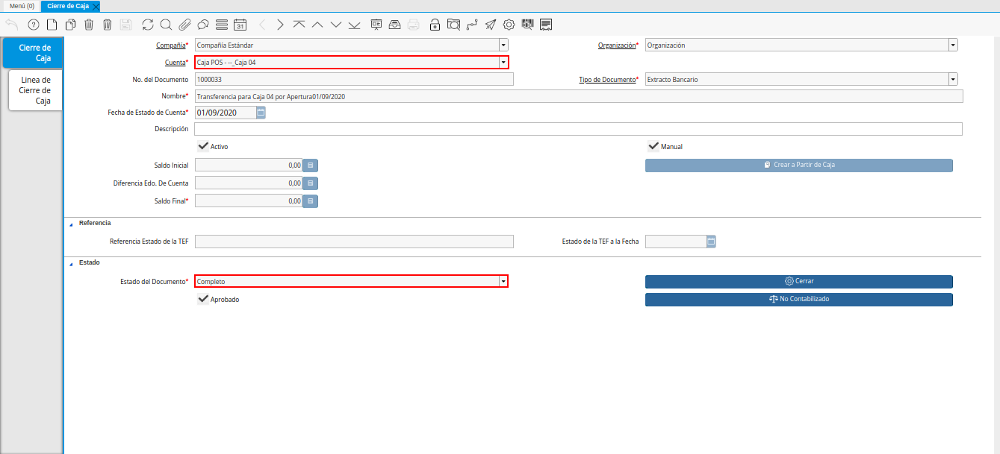
Imagen 21. Cierre de Caja 04 Completada
Podrá visualizar en la pestaña “Línea de Cierre de Caja”, los registros que fueron creados automáticamente a lo largo del día según las transacciones que fueron realizadas en la caja. Basicamente estos son:
Apertura: Crea el registro de cierre de caja (Caja 04), asociando en la línea del mismo el documento de ingreso generado en caja.
Cobros: Crea en la línea de cierre de caja (Caja 04), un registro por cada documento de cobro generado en caja, asociando el documento a la línea.
Retiro de Fondos: Crea en la línea de cierre de caja (Caja 04), un registro por cada documento de egreso generado en caja, asociando el documento a la línea.
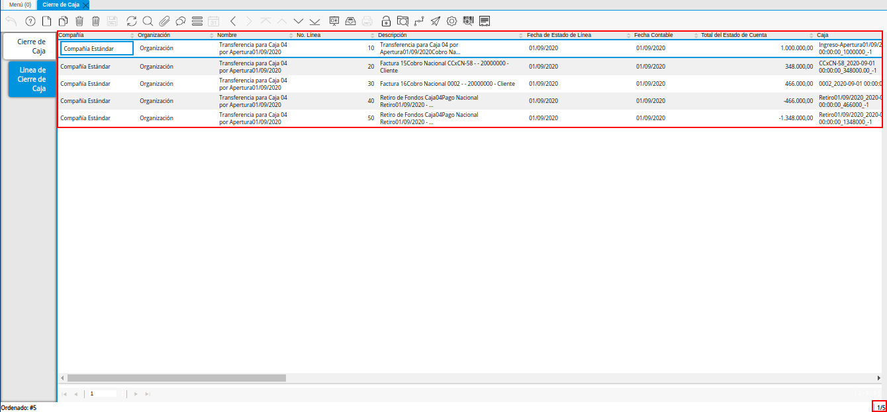
Imagen 22. Pestaña Línea de Cierre de Caja 04 Completada
8.9.2. Completar Registro en Cierre de Caja¶
Ubique el registro de la “Caja Administrativa” generado en la ventna “Cierre de Caja”, el cual se encuentra en estado “Borrador”.
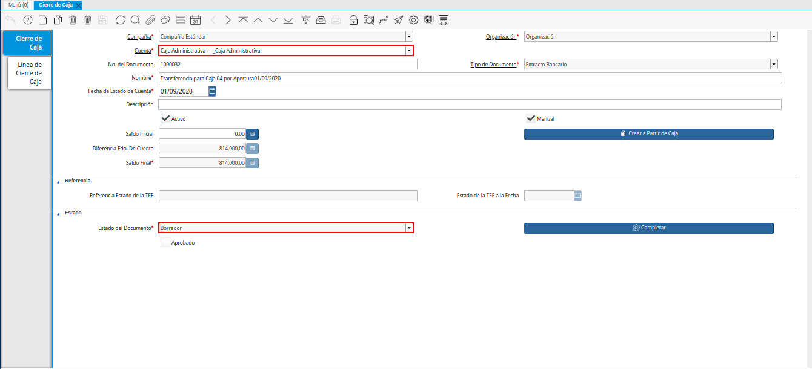
Imagen 23. Cierre de Caja Administrativa en Estado Borrador
Al seleccionar la pestaña “Línea de Cierre de Caja”, podrá visualizar las líneas creadas con los registros asociados de apertura y retiro, ejecutados a lo largo del proceso de punto de venta.
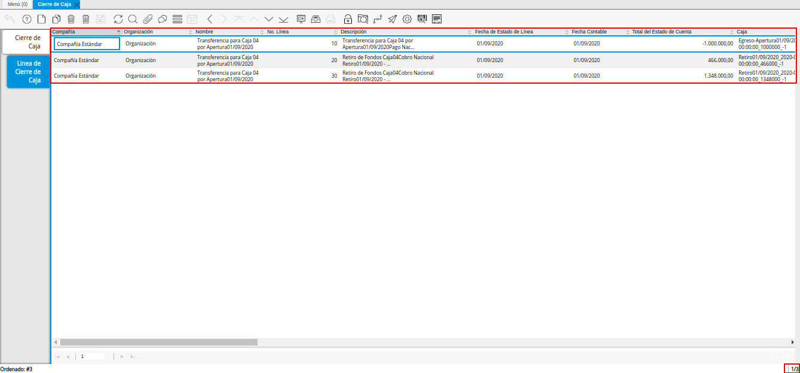
Imagen 24. Pestaña Línea de Cierre de Caja
Regrese a la pestaña principal “Cierre de Caja”, para ejecutar el cierre de la misma.
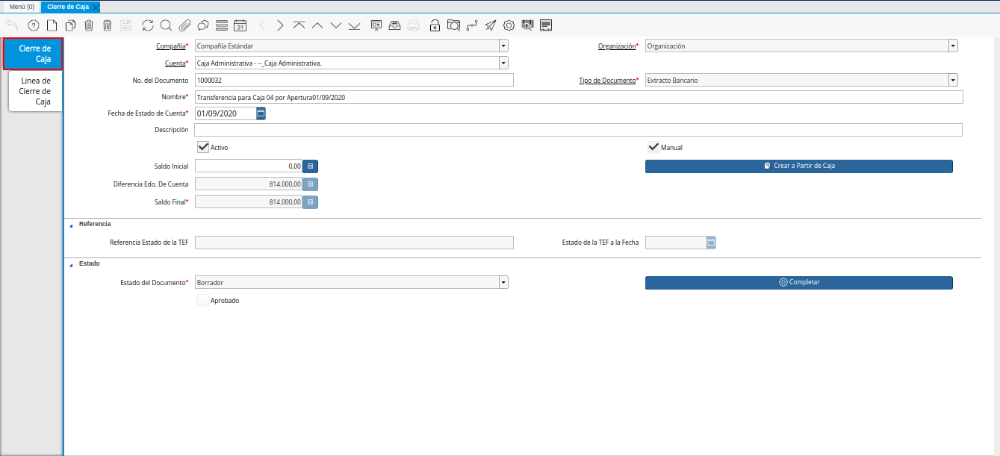
Imagen 25. Pestaña Principal Cierre de Caja
Seleccione la opción “Completar”, para completar el cierre de caja de la “Caja Administrativa”.
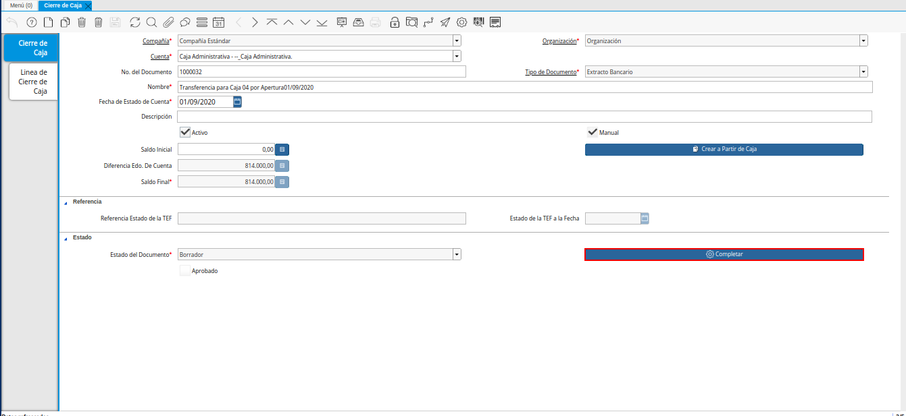
Imagen 26. Opción Completar del Cierre de Caja
Seleccione la acción “Completar” y la opción “OK”, para completar el registro.

Imagen 27. Acción Completar y Opción OK del Cierre de Caja